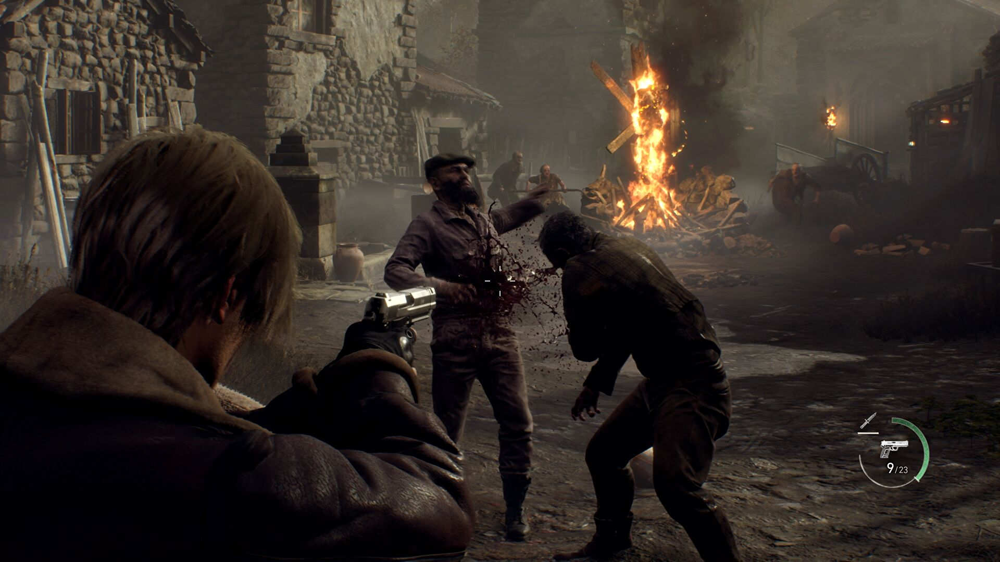
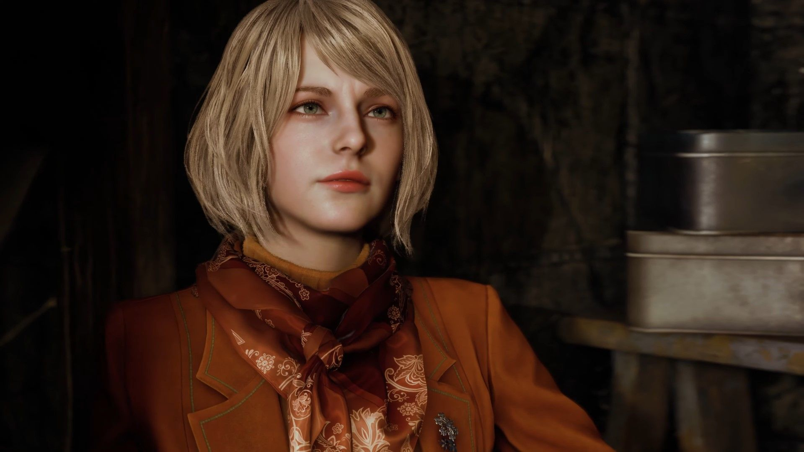
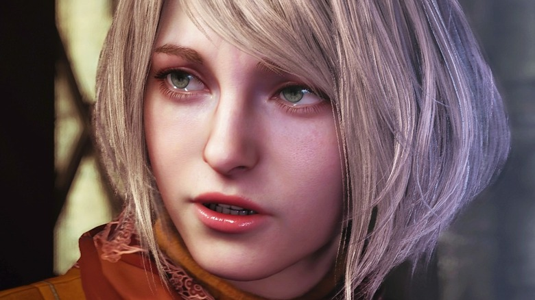
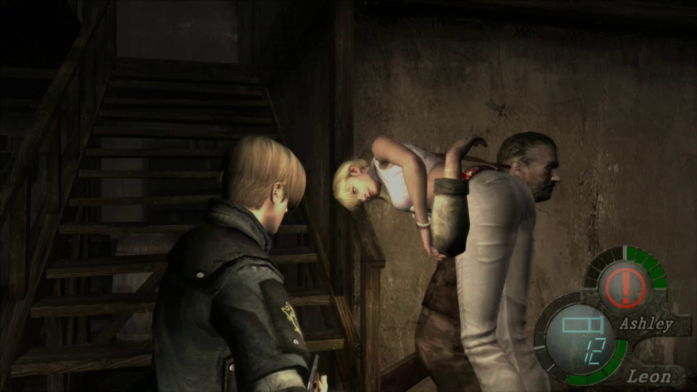
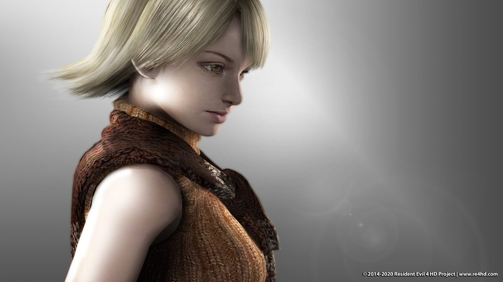

Ashley Resident Evil 4 Remake — Bakal Jadi Beban Atau Tidak?
Beberapa hari yang lalu, Capcom baru saja merilis video trailer terbaru Resident Evil 4 Remake (RE4 Remake). Video tersebut memperlihatkan lebih detail para karakter yang sudah tidak asing bagi para gamer dan juga sedikit gameplay serta grafis yang lebih bagus dari sebelumnya.
Bagi beberapa gamer, ada satu hal yang paling mereka khawatirkan ketika game ini rilis. Bukan, bukan soal penampilan baru karakter seperti Leon dan Ada Wong. Tetapi mereka khawatir dengan karakter Ashley yang sering kali membuat pemain RE4 kesal karena menjadi beban dalam game.
Pada kesempatan kali ini, saya akan membagikan pendapat pribadi seputar “apakah Ashley Resident Evil 4 Remake akan menjadi beban lagi”. Tulisan akan dibuat berdasarkan spekulasi pribadi akan seperti apa Ashley nanti di game RE4 Remake mengingat banyak gamer mendiskusikan masalah ini. Dan juga penulis punya dendam kesumat dengan Ashley versi Original sejak lama.
Ashley Resident Evil 4 Remake akan Menjadi Beban Lagi atau Tidak?
Apakah nantinya dia akan tetap menjadi beban bagi Leon (dalam hal ini Player) di dalam game atau Capcom akan meningkatkan AI karakternya agar menjadi lebih baik dan tidak bikin repot orang lain? Mari kita mulai saja pembahasannya?
Siapa Ashley Resident Evil 4?
Ashley adalah karakter yang pertama kali muncul di game Resident Evil 4 dan merupakan anak dari Presiden Amerika Serikat bernama Graham. Dia diculik oleh kelompok sekte Los Iluminados dimana mereka bertujuan untuk mengendalikan kekuatan Presiden beserta koneksinya.
Untuk bisa menyelamatkan Ashley, Presiden Graham meminta bantuan kepada Leon S Kennedy yang telah menjalani latihan militer selama beberapa tahun setelah dirinya berhasil selamat dari insiden Raccoon City. Ternyata Leon menemukan bahwa sekte Los Iluminados ada hubungannya dengan Bio-Mutant dan sisa-sisa pengembangan penelitian dari perusahaan Umbrella.
Kenapa Ashley Sering Disebut Beban oleh Gamer?
Buat kalian yang sudah pernah bermain game Resident Evil 4, pasti mengerti kenapa banyak gamer menyebut Ashley beban, bukan? Tidak tahu kenapa, Ashley selalu berada dalam posisi sulit dan Leon harus segera menyelamatkannya.
Ketika kalian sibuk mengurus musuh yang ramai, Ashley tiba-tiba saja teriak “LEON HELP”. Ketika kalian meninggalkan dia sebentar saja, tiba-tiba dia teriak lagi karena diculik sama musuh. Hal ini membuat banyak gamer geram dan pengen rasanya ditinggalkan begitu saja, diculik atau melempar Ashley ke kota Raccoon City, menjadi zombie dan hancur bersama dengan kota tersebut.
Setidaknya RE4 menghadirkan fitur dimana Ashley bisa bersembunyi mencari tempat aman di dalam kotak merah. Namun untuk menemukan kotak tersebut, kalian harus mencari dulu lokasinya. Itupun kalian harus selalu dihadapi musuh banyak yang beraninya main circle satu kampung.
Sebenarnya masalah melindungi Ashley ini bukan hal yang perlu kalian proteskan. Itu karena dari awal tujuan Leon datang ke desa terpencil di negara Spanyol adalah menyelamatkan Ashley atas permintaan Presiden Graham. Jadi tidak heran jika kalian langsung merasa overprotective buat melindungi Ashley, mau itu ketika ada musuh ataupun tidak ada musuh.
Apakah Ashley Beban di Resident Evil 4 Remake?
Ketika melihat penampakan Ashley di RE4 Remake, gamer mulai terpincut dan berhasil mencuri perhatian mereka ketika melihat penampilan barunya lebih dewasa. Hal ini sangat berbeda jika dibandingkan versi original yang terlihat seperti bocil manja si paling anak Presiden.
Dilihat dari video trailer terbarunya, Ashley juga memiliki sifat yang terlihat lebih dewasa dibandingkan sebelumnya. Dan cara sikapnya ketika pertama kali bertemu Leon lebih berani bahkan menyerang leon dengan perabotan lampu lilin di dekatnya. Terdapat juga adegan dimana Ashley mengarahkan senjata api ke Leon karena dirinya sudah mulai menunjukkan tanda-tanda dikendalikan oleh virus Las Plagas. Sementara versi Original, Ashley ketakutan setengah mati, melempar leon dengan barang-barang di dekatnya dan kemudian menyudutkan diri tidak bisa melawan.
Meskipun sampai saat ini (25/10) belum ada diperlihatkan video gameplay diluar dari cutscene ketika Leon berusaha melindungi Ashley dari musuh, tetapi kita bisa ambil sedikit kesimpulan. Kedua perbedaan antara versi Remake dan Original sudah bisa terlihat jelas akan ada perbedaan besar dari karakteristik si anak Presiden. Hal ini bisa menjadi clue dan harapan besar bagi gamer bahwa karakter Ashley tidak akan menjadi beban di dalam game.
Ada kemungkinan Ashley Resident Evil 4 Remake bisa menyelamatkan diri sendiri dengan beberapa peningkatan AI dari Capcom ketika Leon/Player sibuk mengurus musuh.Itulah opini pribadi penulis mengenai “apakah Ashley Resident Evil 4 Remake akan menjadi beban lagi”. Semoga saja dengan adanya perubahan penampilan dan juga sifatnya di RE4 Remake bisa menjadi pertanda bahwa dia setidaknya tidak 100% beban bagi Leon ataupun Player.
Itulah opini pribadi penulis mengenai “apakah Ashley Resident Evil 4 Remake akan menjadi beban lagi”. Semoga saja dengan adanya perubahan penampilan dan juga sifatnya di RE4 Remake bisa menjadi pertanda bahwa dia setidaknya tidak 100% beban bagi Leon ataupun Player.
Sumber artikel:
https://gamebrott.com/ashley-resident-evil-4-remake-beban-atau-tidak